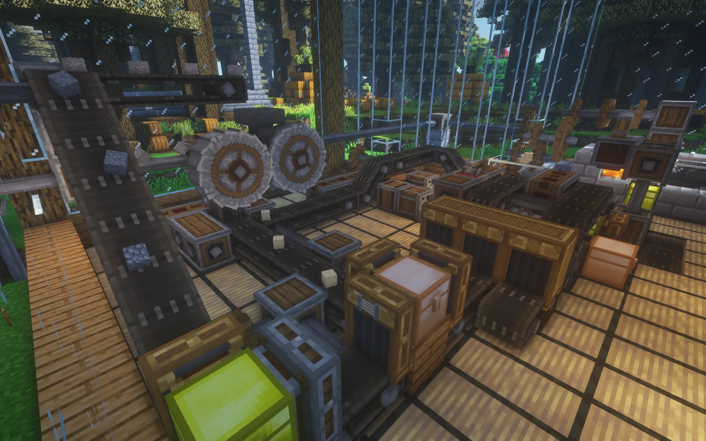

Механічні блоки: Create вводить різноманітні механічні блоки, такі як обертові вали, стрічки, ремені та зубчасті колеса. Ці блоки дозволяють створювати різноманітні механізми, включаючи транспортні системи, млини, ліфти та багато іншого.
Автоматизація: Створення автоматизованих систем стає можливим завдяки механічним пристроям Create. Гравці можуть налаштовувати процеси виробництва, транспортування та сортування ресурсів за допомогою конвеєрів, механічних рук і інших пристроїв.

Інженерні проекти: Create надихає гравців на створення різноманітних інженерних проектів, таких як механічні ферми, автоматичні печі та навіть механічні калькулятори. Ці проекти можуть бути як простими, так і складними, залежно від бажання гравця.
Технічне творчість: Мод Create відкриває перед гравцями величезні можливості для технічного творчості в Minecraft. Вони можуть експериментувати з різними механізмами, створювати унікальні пристрої та навіть будувати цілі фабрики та комплекси.
Сумісність і розширюваність: Create сумісний з іншими популярними модифікаціями Minecraft і має активну спільноту, яка створює додатковий контент, що розширює функціонал мода. Це робить його ще більш привабливим для гравців, які бажають розширити ігровий досвід.